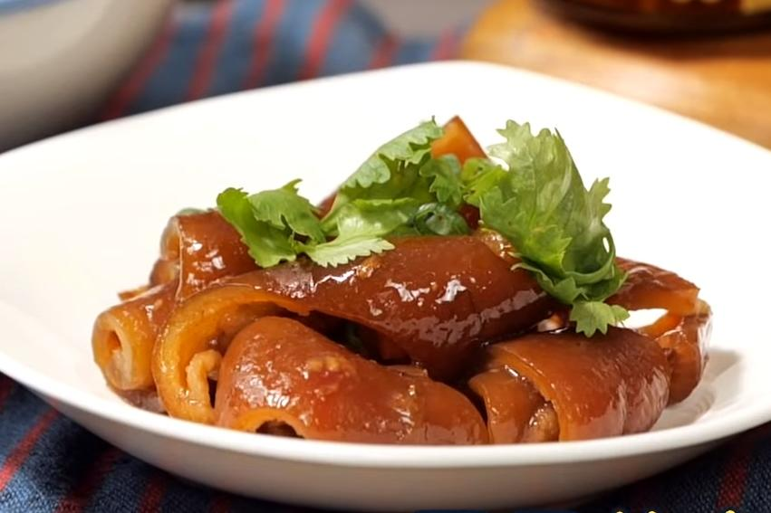
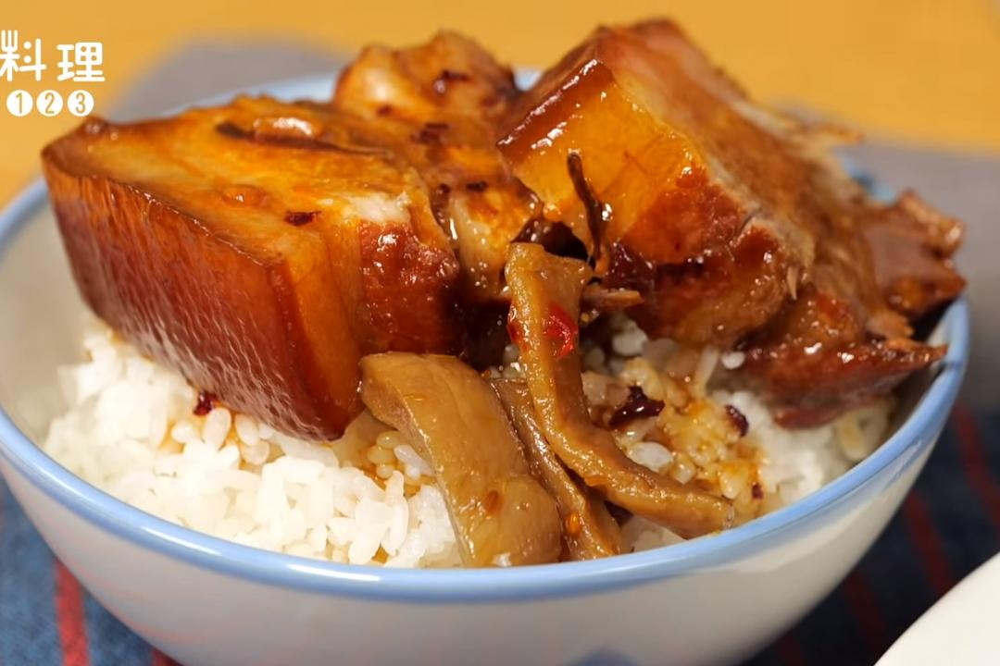
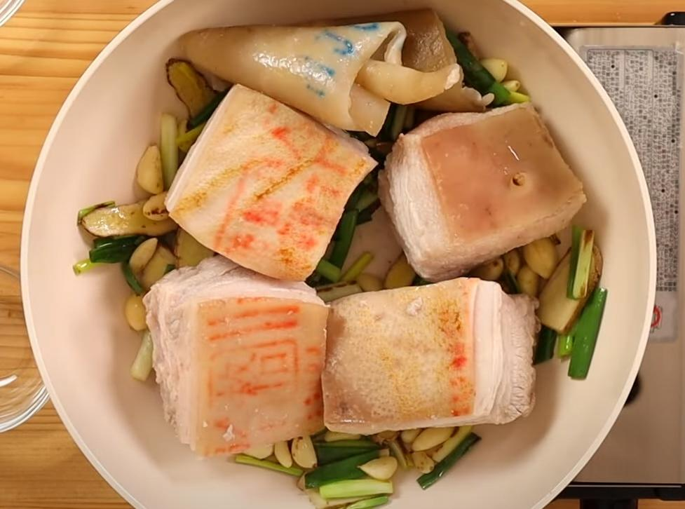

乾鍋加少許油將薑片、蒜仁、蔥段炒出香氣，再放入豬五花、豬皮。
加入冰糖、醬油、米酒、花生醬、麥芽糖、醬油膏、1500c.c.水拌勻，加蓋滷30～40分鐘關火（不掀蓋），隔日先撈出豬皮、開火再次煮滾即完成。
以中火煮約3分鐘，開蓋翻動一下再續煮1分鐘，加入白胡椒粉、鹽即完成。
起鍋
  
蔥爆牛肉介紹 薑絲炒大腸介紹 荷包蛋介紹 心得
練習 影片 音樂
Your browser does not support the audio element. Your browser does not support the video tag.